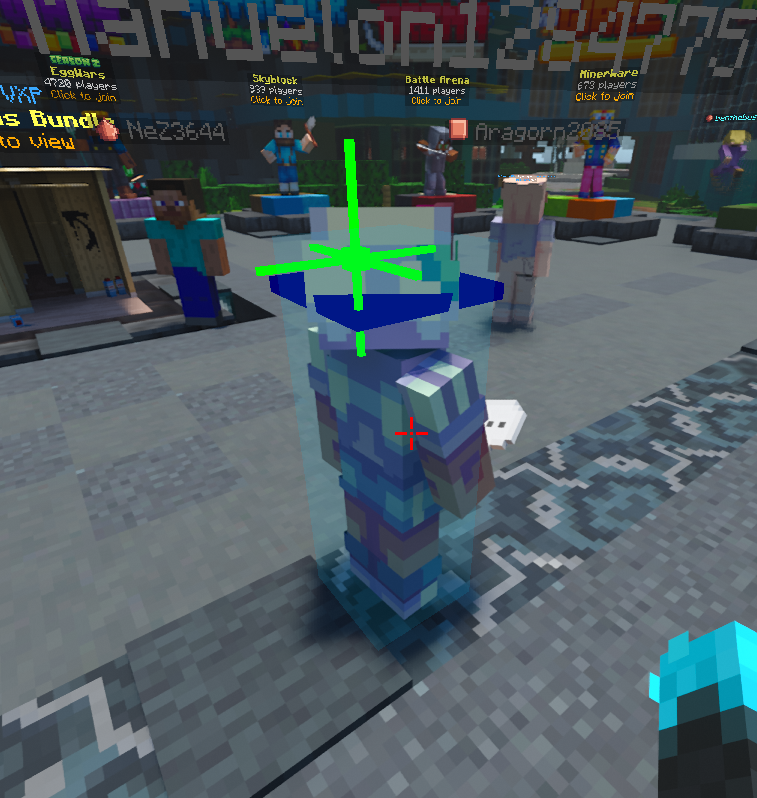
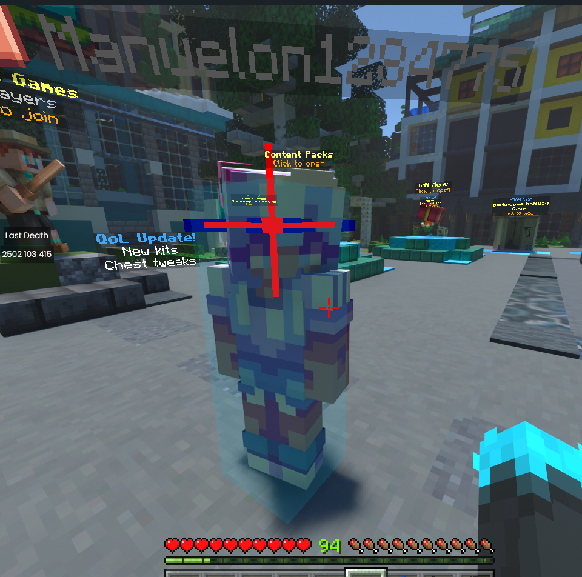
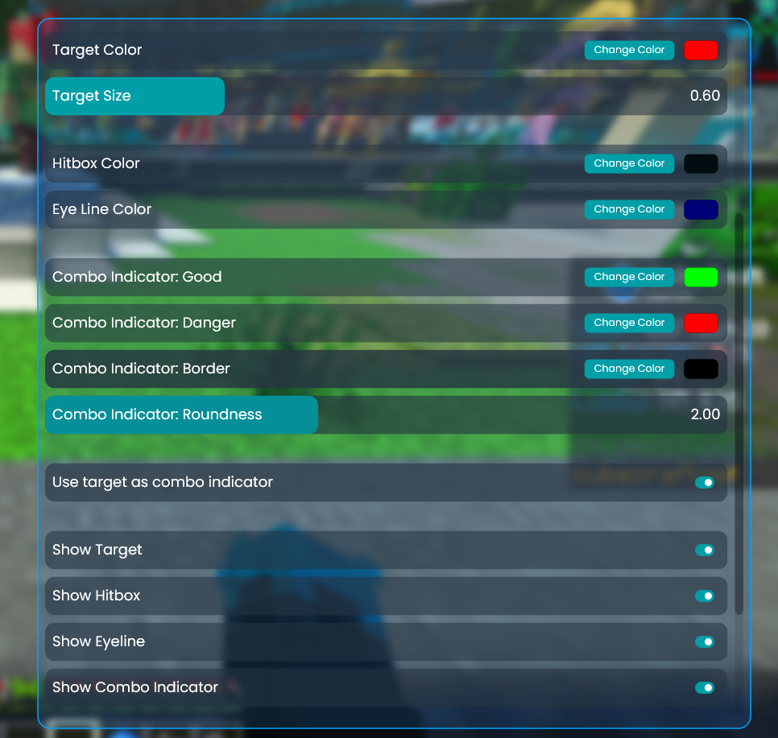

A very helpful mod which gives you a bit more information that can help you with PvP.
The target is the closest point on the other player, in other words where you should be aiming at them to get the best chance of multiple successful hits. There is also a line where the player's eye level is and a full hitbox.
When the target is red, it means that the other player will hit you if they click.
Overall, the goal is to keep your crosshair on the target and keep the target green.
